How do we
low - age?
천
천
히
늙
을
래
요
We inevitably grow old, so we have to be slow-aging
NATURE FOOD
FRUIT & FRESH
GREENISH
SLOW-AGING
필수적인 핵심
저속노화 식단의
저속노화 식사법
평소 건강에 대한 경각심을 갖고 있지 않다가 건강검진을 받고 마음이
달라졌어요.
최대한 채소를 많이 먹으려고 노력하고 있어요!
건강할 때 관리해야 할 것 같아요.
최근 젊은 층 사이에서 '저속노화 식단'이 유행하고 있다. 이는 노화
속도를 늦출 수 있는 밥상을 뜻한다. 통곡물과 채소 중심으로 구성된 건강한
식단을 구성하는 게 핵심이다. 한때 젊은 층을 중심으로 자극적인 음식이 인기를
끌었으나, 최근 들어 다소 심심한 식단이 주목받고 있다. 이 같은 현상은
'웰 에이징(Well aging)' '슬로 에이징(Slow aging)' 등
건강하고 자연스러운 나이 듦에 대한 관심이 높아지면서 나타난 현상이다.
01
저속노화 식단의 대두
02
저속노화 식단의 규칙
03
저속노화 아침식사
새해에는 남들보다 뇌 늙는 속도를 4분의 1로 만드는
식사를 해보자!
식사를 해보자!
정희원 교수
recently
저속노화 식단은 지나친 단순당류, 정제 곡물, 탄수화물 등 노화를 가속하는
음식의 섭취를 줄이고 렌틸콩이나 현미, 귀리 등의 잡곡을 듬뿍 넣은 밥과
녹황채소, 흰살생선 등을 고루 챙겨 먹는 것이 핵심이다.
정 교수는 건강한 식단이 수명을 최대 10년까지 연장할 수 있다고 주장했다. 사람마다 다르겠지만 제가 생각하는 올바른 아침은 혈당 스파이크(혈당이 급격하게 상승했다가 하락하는 것)가 없어야 한다는 거다.
정 교수는 건강한 식단이 수명을 최대 10년까지 연장할 수 있다고 주장했다. 사람마다 다르겠지만 제가 생각하는 올바른 아침은 혈당 스파이크(혈당이 급격하게 상승했다가 하락하는 것)가 없어야 한다는 거다.
아침에 혈당 스파이크를 만들어 놓으면 점심의 식욕도 바꿔놓고 저녁까지
나빠진다. 아침 식사에 단순당과 정제 곡물이 적게 포함돼야 한다.
modern society
search
DIABETES
LIFE EXPECTANCY
SLOW-AGING
20-30대 당뇨병
기대 수명
저속노화 관심도

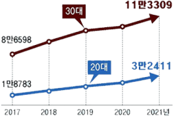
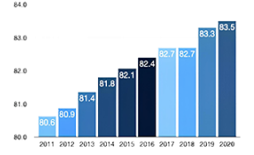
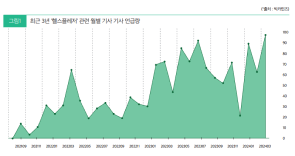


저속노화 아침식사의
필수적 세 가지
첫째, 초록색 채소를 많이 넣자!
둘째, 단백질 음료를 선택하자!
셋째, 단백질을 추가하자!
둘째, 단백질 음료를 선택하자!
셋째, 단백질을 추가하자!
즉 수명이 길어진 만큼 노화 방지에 대한
관심이 증가한 셈이다.
관심이 증가한 셈이다.
즉 수명이 길어진 만큼 노화 방지에 대한
관심이 증가한 셈이다.
관심이 증가한 셈이다.
즉 수명이 길어진 만큼 노화 방지에 대한
관심이 증가한 셈이다.
관심이 증가한 셈이다.
즉 수명이 길어진 만큼 노화 방지에 대한
관심이 증가한 셈이다.
관심이 증가한 셈이다.
즉 수명이 길어진 만큼 노화 방지에 대한
관심이 증가한 셈이다.
관심이 증가한 셈이다.
즉 수명이 길어진 만큼 노화 방지에 대한
관심이 증가한 셈이다.
관심이 증가한 셈이다.
즉 수명이 길어진 만큼 노화 방지에 대한
관심이 증가한 셈이다.
관심이 증가한 셈이다.
즉 수명이 길어진 만큼 노화 방지에 대한
관심이 증가한 셈이다.
관심이 증가한 셈이다.
LIFE EXPECTANCY
LIFE EXPECTANCY
LIFE EXPECTANCY
LIFE EXPECTANCY
LIFE EXPECTANCY
LIFE EXPECTANCY
LIFE EXPECTANCY
LIFE EXPECTANCY
청경채
브로콜리
우유 및 두유
프로틴 스무디
닭고기
시금치
두부
계란
 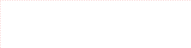
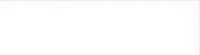
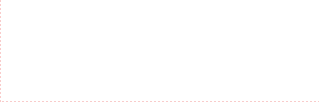
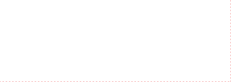
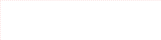
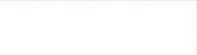
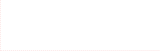
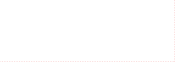